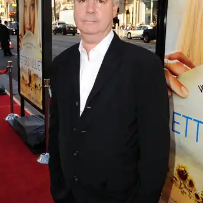

Тім Салліван (нар. 21 лютого 1958) — британський кіно— і телевізійний режисер і сценарист, відомий роботою з телеканалом "Гранада" та художнім фільмом "Джек і Сара" (1995).
Тім Салліван народився в Німеччині, де його батько дислокувався з Королівськими ВПС. Він відвідував Кліфтонський коледж в Брістолі, Англія, перш ніж здобути виставкову стипендію для читання англійської мови та права в Кембриджському університеті. Перебуваючи в Кембриджі, Салліван був членом аматорського драматичного клубу Кембриджського університету та співпрацював з письменником Річардом Махером у виставі Клев, яка проводилася в театрі ім. Корони, Хілл-Плейс у 1978 році. Він також постачав доповнення до "Вогненних колісниць" (1981). Після від'їзду з Кембриджа Салліван влаштувався на літню роботу в якості шофера Ентоні Ендрюса на постановці Brideshead Revisited. Продюсер Дерек Ґрейнджер дізнався, що Салліван пише сценарій з Дереком Джарманом (Боб Упадаун), і заохотив його влаштуватися на роботу дослідником телеканалу Гранада.
Працюючи дослідником першої серії Альфреско, Салліван та Річард Махер співпрацювали, щоб написати свій перший телевізійний серіал, ситком під назвою "Поїзд, який зараз йде", встановлений у вагоні їдальні поїзда InterCity, що курсує між Лондоном та Манчестером. Гранада замовила для розробки сім 30-хвилинних сценаріїв. Салліван пробув у Гранаді ще кілька років, режисуруючи епізоди серіалів, такі як "Свято Бусмана", "Зупиніть цей сміх ззаду", "Коронаційна вулиця" та "Книга справ Шерлока Холмса", а також адаптувавши "Жменю пилу" для телебачення (1988) та режисуру Тетчер: Фінальні дні (1991). У 1995 році Салліван написав і зняв свій перший повнометражний фільм "Джек і Сара" у головних ролях Річард Е. Гранта та Саманта Матіс. Цей фільм був надихнутий колегою чоловіком з Гранади, коли його домовленість про догляд за дітьми порушили і він повинен був привести свою дитину на роботу. У 2000-х Салліван працював позаштатно над багатьма телевізійними та кінопроектами, зокрема, режисуру остаточного епізоду "Холодні ноги для Гранади" та одноразову комедійну драму "Catwalk Dogs" для "Shed Productions". У 2005 році, працюючи над фільмом "Змив", DreamWorks найняв Саллівана, щоб написати початковий проект сценарію для Шрека 4. Салліван написав фільм "Листи до Джульєтти", в якому знялася Аманда Сейфрід, який був випущен в США в 2010 році, зайнявши в усьому світі 80 мільйонів доларів. Він розробляє фільм за мотивами Лондонського марафону та іншого "Весільне плаття". Він співпрацював з багатьма помітними режисерами та продюсерами США, включаючи Рона Говарда, Скотта Рудіна та Джефрі Каценберга.